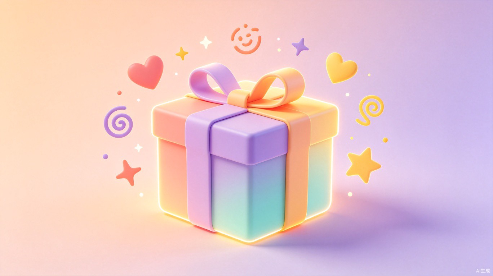

每天 1 分钟，用一个小互动
把今天的情绪"倒"出来

打分、写文字、选表情包……每一样都像在完成任务，用两三天就弃了。
"连续打卡 7 天"只是冷冰冰的数据，没有情感连接，激励不了人继续。
想放松却找不到"中间选项"——短视频太长、日记太重，缺一个轻量出口。
一个网页端互动体验，每天解锁一个不同的情绪小互动——拖拽、绘画、音效拼搭、微游戏……1 分钟玩完，顺便把今天的情绪"倒"出来。
身边朋友总说"今天心情很复杂但说不清楚"——所以我们换一种方式表达。
每天一个随机互动，可能是涂鸦、拼搭、声音调节或微游戏
不需要"写日记"，通过直觉互动自然投射当下的情绪状态
AI 根据你的互动给出温柔回应，不需要任何文字输出
工作/学习压力较大、有情绪波动但不愿意正经"写日记"的人。也包括想培养自我觉察习惯，但坚持不下来的人群。
通勤路上、午休间隙、睡前放松——任何想"喘口气"的时刻。打开就玩，玩完就关，零负担。
用户每天打开的不是待办清单，而是一个未知的小惊喜。这种设计思路可以启发更多健康类、教育类产品——严肃的事情，不一定非要用严肃的方式做。